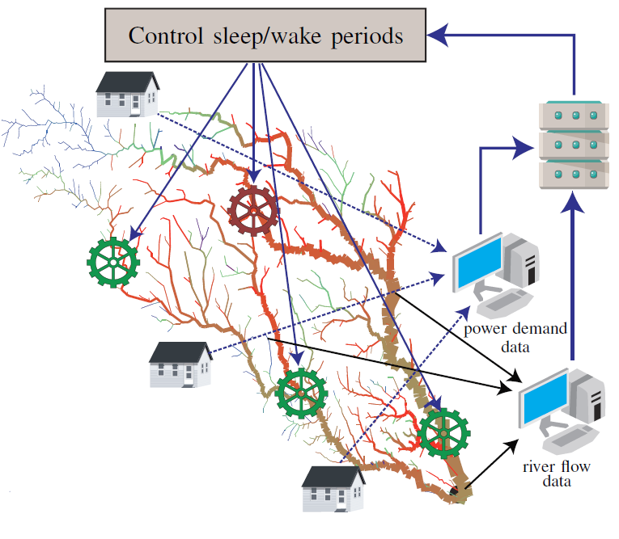

Research Areas
Run-of-the-river
|  |
Uncertainty in either the structure of complex interdependent networks or their coupling with the environment makes the resource allocation problems challenging. For instance, run-of-the-river (ROR) hydrokinetic power plants aim to overcome the catastrophic ecological impact of large dam-based hydroelectric power generation projects and minimize the risk of large area flooding. The ROR power plants harvest the kinetic energy within a river at relatively small, local scales at multiple places along the river basin, but do not significantly impact the water flow and damage the ecosystem. However, the ROR power generation profile and efficiency is critically affected by uncertainty in generated output due to strong weather and climate inter-dependence. In addition, the power demand is spatially and temporaly distributed with complex dynamics that raises the question to how optimally place and manage the ROR hydrokinetic power plants within a large river basin area. Ad-hoc distribution or ROR allocation based on static large-scale analysis of a river basin cannot cope with highly variable changes in the weather, climate (e.g., catastrophic levels of wind, precipitation, extreme temperatures/droughts) and power demand making the instantaneous identified solution obsolete to apply at run-time. Similar challenges caused by various sources of uncertainty affect the wind and solar power generation.
To provide a climate-aware and sustainable power/energy generation methodology, we formulate a general problem of resource distribution (allocation) which is dependent on various levels of uncertainty coming either from cyber-physical system operation or from the environment. We particularize this problem to the (ROR) distribution across a large river basin subject to uncertainties in the river flow while considering infrastructure and cyber (communication) constraints. Our methodology aims to place the RORs across the large river basin such that the difference between the probability distribution of the power demand and that of generated power is minimized subject to infrastructure constraints. A probabilistic clustering approach is used to partition the geographic space. The uncertainty in the environment (river) is split into 2 parts, short-term and long-term. For short-term, a novel ‘disturb and settle’ algorithm is employed to determine the placement of RORs. For long-term a closed loop is designed as shown in the above figure to decide the sleep/wake periods of the ROR units. The real water-flow data of Mississippi river is used to study the performance of the proposed formulation and algorithm.
Compact yet Accurate Causal Mathematical Models of Complex Dynamics with Applications in Cyber-Physical Systems
 |
From microbial communities, human physiology to social and biological/ neural networks, from information technology and connected vehicle networks, to smart power grid, complex interdependent systems display multi-scale spatio-temporal patterns that are classified as non-linear, non-Gaussian, non-ergodic, and/or fractal. Distinguishing between the sources of nonlinearity, identifying the nature of fractality (space versus time) and encapsulating their mathematical characteristics into dynamic compact causal models remains a major challenge for studying and optimizing complex systems.
To address these challenges, we propose a new mathematical modeling paradigm for constructing compact yet accurate models of complex systems dynamics that learns the causal effects and influences among cyber and physical processes by analyzing the statistics of the magnitude increments and the inter-event times of stochastic processes. Unlike current trends in nonlinear system modeling which postulate mathematical expressions (possibly without physical based feedback), this mathematical analysis of the magnitude increments and the inter-event times allows us to extract knowledge about the causal dynamics and the degree of nonlinearity among cyber and physical processes and encode the observed statistical properties through compact mathematical expressions (fewest parameters) and a multi-fractional order nonlinear partial differential equations for the probability to find the system in a specific state at one time. Extensive simulation experiments on several sets of physiological processes demonstrate that the derived mathematical models offer superior accuracy over state of the art techniques to model brain-muscle interdependency. Current efforts investigate the capabilities of this mathematical framework to model homeostasis and robustness and explain the principles of robust decision-making dynamics in biological systems.
Harnessing the Structure of Complex Interdependent Networks: Applications to Drug Repositioning
 |
Despite significant efforts invested in drug discovery, the drug design process is cumbersome, slow, prone to many errors, and expensive in time and monetary units. For instance, the discovery of bio-active molecules targeting a disease or viral infection can take years and cost millions of dollars. These challenges are even further exacerbated by the accelerated resistance of various bacteria/viruses or the unwanted adaptation of diseases to current treatments. In contrast, computational methods are powerful and promising tools for drug mining and repositioning. Moreover, drug repositioning can be achieved faster and cheaper through computational and mathematical approaches that enable a truly personalized and precise medical treatment for the patient’s diseases.
To overcome the challenges of current drug repositioning methods (that rely on chance and are achieved by experimentally exploring the link between molecular structure and biological activity), we developed a computational approach that analyzes the drug-drug interaction networks to uncover the functional drug categories along with the intricate relationships between them via algorithmic clustering techniques. Using modularity-based and energy-model layout community detection algorithms, we classify the drug-drug interaction network into 9 clusters with relevant pharmacological properties (e.g., immune system related drugs, nervous system acting drugs). Our results recover recent and old repositioning, but also indicate new potential drug repurposing. We are extending this topological approach to applications for the analysis of drug-target interactions or for phenotyping patients in personalized medicine applications.
Decoding the Principles of Emergence and Resiliency in Biological Collective Systems
 |
Despite significant research on decoding the principles of collective behavior and autonomy in biological systems, we lack a unified theory and a quantifiable framework for measuring their emergence, self-organization, robustness, resiliency, and complexity. Towards this end, we formulated a statistical physics inspired framework for describing the collective system dynamics of biological swarms through a novel free-energy landscape encoding the spatio-temporal states of the swarm motion and its interactions. This free-energy formalism supports the definition of a performance envelope for complex collective systems consisting of formulas for quantifying the missing information, emergence, self-organization, and complexity metrics. These metrics enable a categorization of the degree of complexity and intelligence exhibited by a complex system. This algorithmic perspective applied to studying biological systems can be integrated into new computer-aided design frameworks for the engineering of collective motions of unmanned aerial vehicles (UAVs) and autonomous vehicles to achieve specific degrees of emergence, self-organization, robustness, and complexity. Moreover, this formalism opens new more tractable venues for controlling complex systems by shifting the focus from the agent / state space representation to a reduced order encapsulated in the free-energy landscape.
Design Methodologies for Exascale Reconfigurable Data-Center-on-a-Chip Architectures
The heterogeneity, dynamicity and variability of data- and computation-intensive tasks of big data applications call for massively parallel architectures. Networks-on-Chip (NoC) offer a promising approach for dealing with the resource-intensive tasks (processing, communication, storage). However, relying on simple networking principles to address the chip-level interconnection problems (e.g., data rate throughput, network delay, power consumption, fault-tolerance) does not adequately tackle the hardware-software interactions (e.g., traffic dynamics patterns). Moreover, it is not possible to increase the size and NoC dimensions in the deep-submicron domain with the aim of achieving higher performance since wire-based interconnects imply long propagation delays and higher energy consumption. To provide ultra-fast high-fidelity terabyte (TB) communication and exploit the massive fine-grained parallelism for exascale applications, we develop novel design methodologies for data-center-on-a-chip (DCoC) architectures: (i) We propose a user-cooperated network coding (NC) NoC consisting of cooperation units, a corridor routing algorithm to support the NC-based multicast and an adaptive flit dropping scheme to avoid network congestion and save power. This communication strategy offers a 100X improvement in throughput over traditional approaches. (ii) To overcome the inefficiencies associated with the spatio-temporal variability of big data applications, we propose a general mathematical framework for reconfigurable NoC design and runtime optimization. This analytical formalism can be applied to arbitrary network topologies and sizes, routing, or heterogeneous resource allocation problems. Mathematical investigation of the NoC reconfigurability problem allows us to design a dynamic resource allocation algorithm, which guarantees the attainment of optimality region. (iii) To reduce the complexity of the design-space exploration of large-scale NoCs, we formulate a mathematical benchmark synthesis framework that not only allows the extraction of dynamical task dependencies of big-data applications and synthesizes traffic workloads spatio-temporally consistent with realistic traffic behavior, but can also be easily scaled via complex network inspired algorithms for generating large scale benchmarks while preserving key structural features that governs application communication behaviors. This enables the design of DCoC architectures consisting of thousands of cores.
Networks-on-Chip-based Manycores for Distributed Intelligence in Cyber-Physical Systems
The development of the interactive computation paradigm, either under the internet-of-things (IoT) or cyber-physical systems (CPS) incarnations, offers the promise of unlocking crucial solutions in science, healthcare, transportation, energy, or business, yet poses significant challenges in terms of network infrastructure design and optimization. For example, while current search engines provide computational results on query processing within fractions of a second, in the future, we aim to be able to design systems that support complex information-exploration, -recognition, -mining and -synthesis processing that may even sustain brain-to-brain communication triggered by simple intentions. Such opportunity does not only calls for algorithmic strategies for dealing with cyber components running at different rates, but also requires efficient computing platforms that provide real-time sense- and decision-making. From a healthcare perspective, there is a need for architectures that can integrate sensed physical processes, analyze risk indices, and determine therapeutic-based control strategies.
Meeting the real-time requirements of these emerging applications calls for new design and optimization methodologies of CPS infrastructures with ultra-low power and thermal dissipation profiles, as well as ultra-low latency. To address these challenges, we develop algorithms for profiling applications from the CPS domain (e.g., biochemical stochastic simulation for viral detection studies, model predictive control for homeostasis management), identifying the computational and communication requirements and designing NoC-based accelerators. For instance, we proposed algorithms for designing efficient NoC-based multicores capable of solving large-scale nonlinear model predictive control (NMPC) problems. Relying on small form factor and energy efficient manycores, in the healthcare domain, the CPS can not only monitor the physiology and quality-of-life of individuals, but can also find signs of abnormality (e.g., bacterial/viral infection), and trigger control decisions over multiple space and time scales.